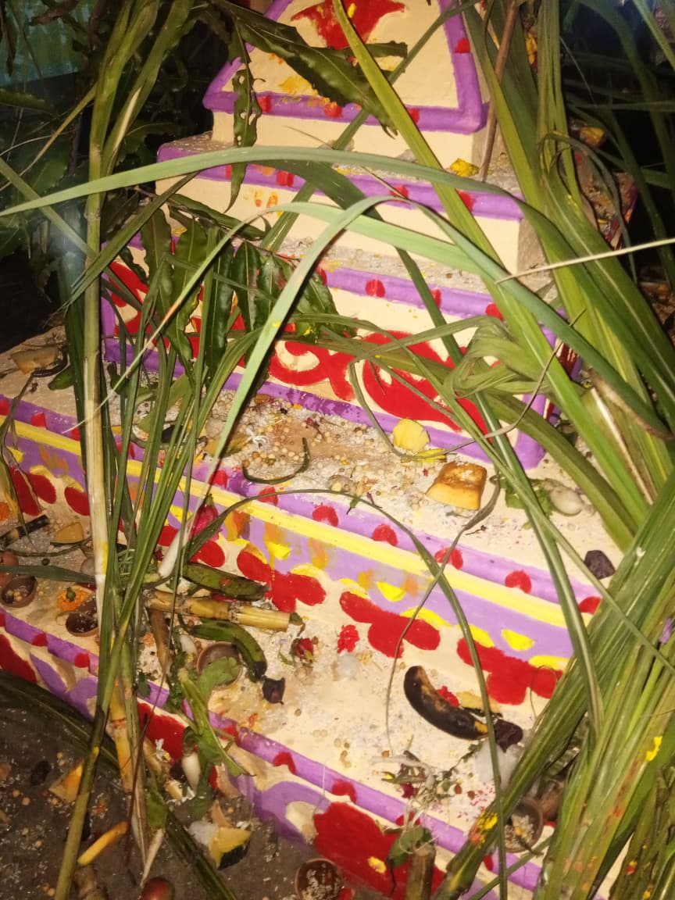
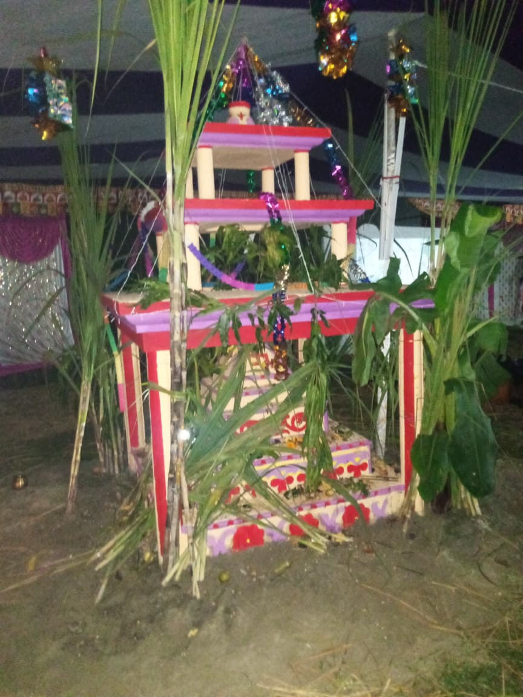

In the village of Bairatwa, Makar Sankranti is celebrated with great enthusiasm
and devotion. On this day, people wake up early, take holy baths, and offer
prayers to the Sun God for prosperity and good harvests. The sky above the village
fills with colorful kites as children and adults joyfully compete, shouting with
excitement when their kites soar high. Women prepare traditional sweets like
tilkut and chikkis, made of sesame and jaggery, symbolizing warmth and harmony.
The whole community gathers together, sharing food, laughter, and blessings. In
Bairatwa, Makar Sankranti becomes a vibrant festival of unity, tradition, and
happiness.
Republic Day
In राजकीय प्राथमिक विद्यालय बैरटवा, Republic Day is celebrated with great
pride and patriotism. Early in the morning, teachers and students gather
in the school courtyard, decorated with tricolor flags and flowers. The
celebration begins with the hoisting of the national flag, followed by the
singing of the national anthem in unison. Students present speeches,
patriotic songs, and cultural performances that honor the sacrifices of
freedom fighters. Teachers inspire the children with words about the
importance of the Constitution and democracy. Sweets are distributed to
all, filling the day with joy. In बैरटवा, Republic Day unites the school
in respect and patriotism.
Saraswati Puja
In the village of Bairatwa, Saraswati Puja is celebrated with deep devotion
and cultural charm. On this day, villagers beautifully decorate idols of
Goddess Saraswati, the goddess of wisdom, learning, and arts, with flowers
and traditional attire. Students and children place their books, pens, and
instruments before the deity, seeking her blessings for knowledge and success.
The village schools and community halls become centers of prayer, bhajans, and
cultural programs. Women prepare festive dishes and share prasad with neighbors,
strengthening bonds of togetherness. In Bairatwa, Saraswati Puja is not only a
religious event but also a celebration of learning and culture.
Holi
In the small village of Bairatwa, celebrations bring people together in a
spirit of joy and unity. Festivals are marked with colorful decorations,
traditional songs, and vibrant dances that reflect the rich culture of the
village. During special occasions, the entire community gathers in the village
square, sharing homemade sweets and delicacies prepared with love. Children
play traditional games, while elders narrate stories of heritage and values.
The sound of drums and folk instruments fills the air, creating a festive
atmosphere. In Bairatwa, every celebration becomes a symbol of togetherness,
reminding everyone of their shared traditions and cultural pride.
Jhaanda Mela
In our village Bairatwa, the annual Jhaanda Mela is celebrated with great devotion
and community spirit. Villagers gather to hoist a sacred flag, symbolizing faith,
unity, and the blessings of Lord Hanuman. The event begins with prayers and
traditional rituals, followed by vibrant cultural performances, folk songs, and
fairs that attract people from nearby villages. For Bairatwa, the Jhaanda Mela is
not just a religious occasion but also a festival of togetherness, where
differences are set aside, and everyone participates with joy. It reflects the
village’s cultural heritage and strengthens the bond among its people.
Independence Day
In राजकीय प्राथमिक विद्यालय बैरटवा, Independence Day is celebrated with
heartfelt enthusiasm and patriotic spirit. The school campus is decorated
with tricolor flags, flowers, and handmade charts prepared by the students.
The program begins with the hoisting of the national flag by the head
teacher, followed by the singing of the national anthem in a proud and
united voice. Students perform patriotic songs, speeches, and small skits
that remind everyone of the struggles and sacrifices made for freedom.
Teachers encourage students to value independence and serve the nation
responsibly. At the end, sweets are distributed, making the day joyful
and memorable.
Durga Puja
In the village of Bairatwa, Durga Puja is celebrated with devotion and joy,
especially within homes. Families set up small idols or pictures of Goddess
Durga, decorating the space with flowers, incense, and traditional lamps.
Each morning and evening, prayers and aarti are performed, filling the
houses with divine chants and the fragrance of incense. Women prepare
festive dishes and offer bhog to the goddess before sharing it with family
and neighbors. Children enjoy the celebrations, wearing new clothes and
visiting relatives. In Bairatwa, Durga Puja at home is not just worship
but also a time of togetherness, blessings, and cultural pride.
Diwali
In our village Bairatwa, Diwali is celebrated with great joy and togetherness.
A few days before the festival, houses are cleaned, decorated with mud rangolis,
and lit with oil lamps made of clay. On Diwali night, the entire village glows as
rows of diyas brighten every home. Families gather to worship Goddess Lakshmi,
offering prayers for prosperity and happiness. Traditional sweets are prepared
and shared with neighbors, while children burst crackers in open fields. The
celebration is simple yet deeply rooted in tradition, reflecting unity and warmth.
In Bairatwa, Diwali truly becomes a festival of light and harmony.
Rasiyao-Roti
In the village of Bairatwa, **Rasiyao-Roti** is celebrated with warmth,
devotion, and togetherness. On this special day of Chhath Puja, villagers
prepare *rasiyao*, a sweet jaggery dish, along with simple handmade rotis
as prasad. Families first offer it to the deity, seeking blessings, and
then share it with neighbors and relatives. People gather in each other’s
homes, exchanging prasad with love and respect, which strengthens their
bonds of unity. The entire village feels like one big family, as laughter,
devotion, and the fragrance of jaggery fill the air. In Bairatwa,
Rasiyao-Roti becomes a symbol of faith, harmony, and community spirit.
Chhath Puja


Chhath Puja is one of the most important festivals celebrated in our village.
Dedicated to the Sun God, people gather near rivers and ponds to offer prayers.
Women observe fasts, sing devotional songs, and perform rituals for health,
prosperity, and well-being of their families. The festival creates a beautiful
atmosphere of unity, devotion, and cultural pride in our community.